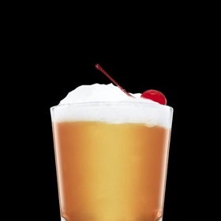

Bebidas, Drinks, Whisky
2 Partes de Uísque escocês
1 Parte de Suco de lima-da-pérsia
1 Parte de Xarope simples
1 Uma Clara de ovo
1 ramo de alecrim tostado
Encher uma coqueteleira com cubos de gelo. Adicionar todos os ingredientes. Agitar e coar em um copo rocks resfriado cheio de cubos de gelo. Decorar com uma cereja marrasquino.
Tipo de taça: Copo Rocks
Em 1962, a Universidad del Cuyo publicou um artigo que citou o jornal peruano El Comercio de Iquique como indicando que Eliott Stubb foi o criador do "whisky sour" em 1872. O El Comercio de Iquique foi publicado por Modesto Molina entre 1874 e 1879. No entanto, a mais antiga menção histórica de um "whisky sour" preparado no mundo vem de um jornal publicado em Wisconsin, em 1870. Como o "gim sour" tem referências históricas que datam da década de 1860, a origem peruana para o "whisky sour" é espúria.